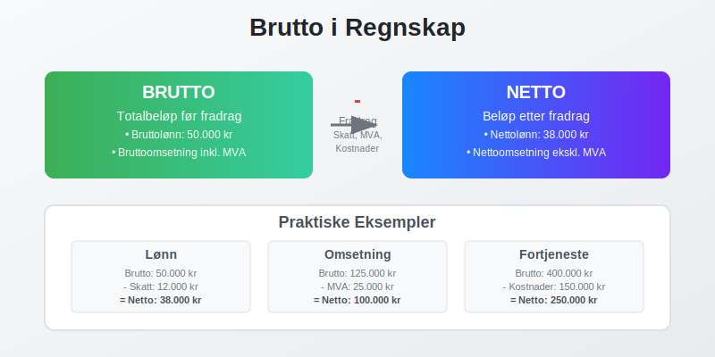
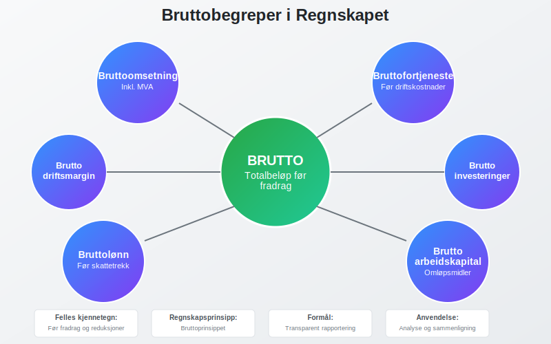
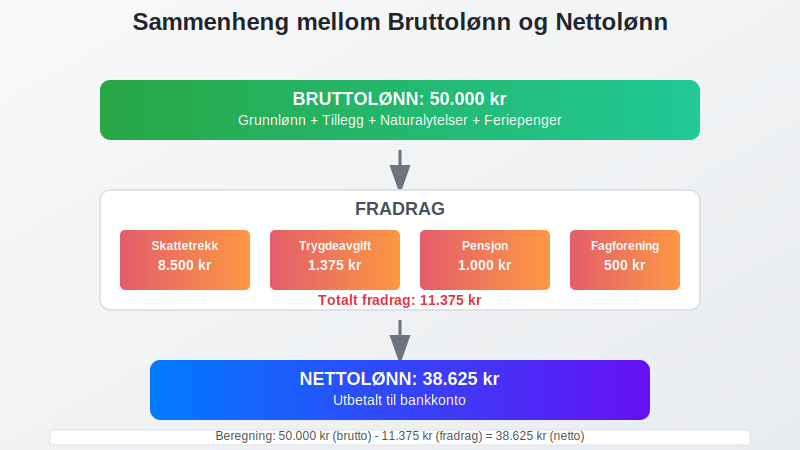
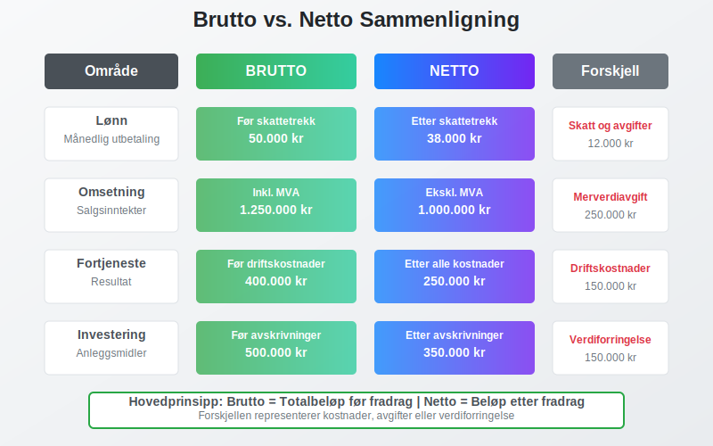
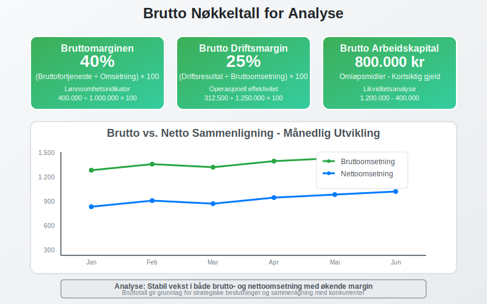
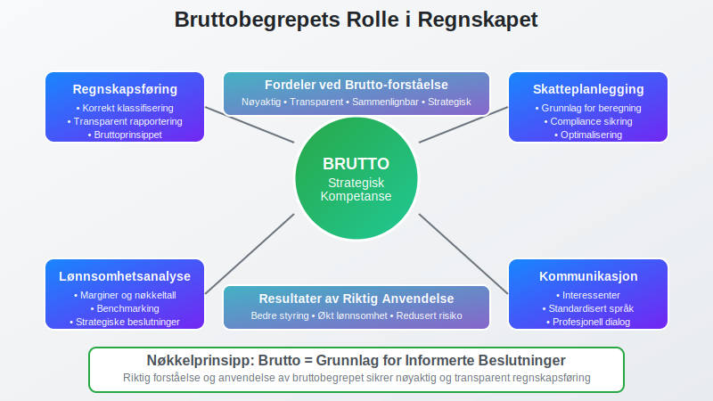

Brutto er et grunnleggende begrep i regnskapet som refererer til totalbeløpet før fradrag av skatter, avgifter, kostnader eller andre reduksjoner. Begrepet brukes i mange sammenhenger og er essensielt for å forstå forskjellen mellom brutto- og nettoverdier i regnskapsføringen.

Hva er Brutto?
Brutto representerer den opprinnelige eller totale verdien av et beløp før det gjøres fradrag. Dette står i motsetning til netto, som er beløpet etter at alle relevante fradrag er gjort. Forståelsen av brutto-netto-forholdet er fundamental for:
- Korrekt regnskapsføring av inntekter og kostnader
- Skatteberegninger og avgiftsbehandling
- Lønnsadministrasjon og personalregnskap
- Analyse av lønnsomhet og økonomisk ytelse
- Sammenligning av økonomiske nøkkeltall
Grunnleggende Prinsipper
Bruttobegrepet bygger på flere regnskapsprinsipper:
- Bruttoprinsippet: Inntekter og kostnader skal vises i sin helhet
- Sammenstillingsprinsippet: Kostnader skal matches mot tilhørende inntekter
- Forsiktighetsprinsippet: Usikre poster skal behandles konservativt
- Klarhetsprinsippet: Regnskapet skal gi et klart bilde av virksomheten
Bruttobegreper i Regnskapet

Bruttoomsetning
Bruttoomsetning er den totale salgsinntekten før fradrag av merverdiavgift, rabatter og returvarer.
Beregning av Bruttoomsetning:
Bruttoomsetning = Salgsinntekter + MVA + Rabatter + Returvarer
Eksempel: Bruttoomsetning
Et selskap selger varer for 800.000 kr ekskl. MVA (25%), gir 50.000 kr i rabatter og mottar 20.000 kr i returvarer.
Beregning:
- Salgsinntekter ekskl. MVA: 800.000 kr
- MVA (25%): 200.000 kr
- Rabatter: 50.000 kr
- Returvarer: 20.000 kr
- Bruttoomsetning: 1.070.000 kr
Bruttofortjeneste
Bruttofortjeneste er differansen mellom salgsinntekter og varekostnader før andre driftskostnader.
Formel for Bruttofortjeneste:
Bruttofortjeneste = Salgsinntekter - Varekostnad
Bruttomargin (%) = (Bruttofortjeneste ÷ Salgsinntekter) × 100
Eksempel: Bruttofortjeneste
| Post | Beløp (kr) |
|---|---|
| Salgsinntekter | 1.000.000 |
| Varekostnad | 600.000 |
| Bruttofortjeneste | 400.000 |
| Bruttomargin | 40% |
Bruttolønn
Bruttolønn er den totale lønnen før fradrag av skatt, arbeidsgiveravgift og andre trekk.

Komponenter i Bruttolønn:
- Grunnlønn: Fast månedlig eller timelønn
- Overtidstillegg: Tillegg for arbeid utover normal arbeidstid
- Bonus og provisjon: Variable lønnskomponenter
- Naturalytelser: Verdien av goder som bil, telefon, etc.
- Feriepenger: Opptjente feriepenger (12% av bruttolønn)
Brutto vs. Netto Sammenligning

| Område | Brutto | Netto | Forskjell |
|---|---|---|---|
| Lønn | Før skattetrekk | Etter skattetrekk | Skatt og avgifter |
| Omsetning | Inkl. MVA | Ekskl. MVA | Merverdiavgift |
| Fortjeneste | Før driftskostnader | Etter alle kostnader | Driftskostnader |
| Investering | Før avskrivninger | Etter avskrivninger | Verdiforringelse |
Regnskapsføring av Bruttoposter
Bruttoomsetning i Regnskapet
Bruttoomsetning regnskapsføres når salget finner sted, uavhengig av betalingstidspunkt:
Regnskapsføring ved salg:
Debet: Kundefordringer / Kasse 1.250.000 kr
Kredit: Salgsinntekter 1.000.000 kr
Kredit: Utgående MVA 250.000 kr
For mer informasjon om bruttolønn, se Hva er Bruttolønn?.
Bruttolønn i Lønnsregnskapet
Bruttolønn danner grunnlaget for alle lønnsberegninger og A-meldingen:
Regnskapsføring av bruttolønn:
Debet: Lønnskostnad 500.000 kr
Kredit: Skyldig lønn 400.000 kr
Kredit: Skyldig skattetrekk 100.000 kr
Praktiske Anvendelser
Budsjett og Prognoser
Bruttotall brukes som utgangspunkt for:
- Omsetningsprognoser: Planlegging av fremtidig salg
- Lønnsbudsjett: Beregning av totale lønnskostnader
- Investeringsanalyser: Vurdering av avkastning før kostnader
- Skatteplanlegging: Grunnlag for skatteberegninger
Nøkkeltallsanalyse

Viktige brutto-baserte nøkkeltall:
| Nøkkeltall | Formel | Formål |
|---|---|---|
| Bruttomarginen | (Bruttofortjeneste ÷ Omsetning) × 100 | Lønnsomhetsanalyse |
| Brutto driftsmargin | (Driftsresultat ÷ Bruttoomsetning) × 100 | Operasjonell effektivitet |
| Brutto arbeidskapital | Omløpsmidler - Kortsiktig gjeld | Likviditetsanalyse |
Skattemessige Konsekvenser
Bruttobegrepet har viktige skattemessige implikasjoner:
- Skattepliktig inntekt: Beregnes ofte fra bruttoinntekt
- Fradragsrett: Kostnader trekkes fra bruttoinntekt
- Minstefradrag: Standardisert fradrag på 46% av bruttolønn (maks kr 104 850) som automatisk reduserer skattepliktig inntekt
- MVA-behandling: Bruttoomsetning danner grunnlag for MVA-beregning
- Arbeidsgiveravgift: Beregnes av bruttolønn over visse grenser
Vanlige Feil og Misforståelser
Typiske Feilkilder
- Blanding av brutto og netto: Inkonsistent bruk av begrepene
- MVA-behandling: Feil håndtering av merverdiavgift i bruttotall
- Periodisering: Feil tidspunkt for regnskapsføring av bruttoposter
- Valutaomregning: Komplisert ved utenlandske transaksjoner
Beste Praksis
For å unngå feil bør man:
- Etablere klare rutiner for brutto/netto-klassifisering
- Dokumentere beregningsmetoder grundig
- Gjennomføre regelmessige avstemminger mot eksterne kilder
- Oppdatere seg på regelverksendringer som påvirker bruttobegrepet
Internasjonale Perspektiver
IFRS og Bruttoprinsipper
Under International Financial Reporting Standards (IFRS) er bruttoprinsippet sentralt:
- IAS 1: Presentasjon av finansregnskap
- IFRS 15: Inntektsføring fra kontrakter med kunder
- IAS 19: Ytelser til ansatte (bruttolønn)
Forskjeller Mellom Land
Bruttobegrepet kan variere mellom land:
| Land | Særtrekk | Eksempel |
|---|---|---|
| Norge | MVA inkludert i brutto | Bruttoomsetning inkl. 25% MVA |
| USA | Sales tax separat | Gross revenue før sales tax |
| Tyskland | Umsatzsteuer integrert | Bruttoumsatz inkl. 19% USt |
Digitalisering og Automatisering
Moderne Regnskapssystemer
Dagens regnskapssystemer håndterer brutto/netto automatisk:
- Automatisk MVA-beregning fra bruttoomsetning
- Integrert lønnsmodul for brutto/netto-beregninger
- Sanntidsrapportering av brutto nøkkeltall
- API-integrasjoner med banksystemer
Fremtidige Utviklingstrekk
- AI-basert kategorisering av brutto/netto-poster
- Blockchain-teknologi for transparent bruttosporing
- Sanntidsanalyse av bruttomarginer og lønnsomhet
Konklusjon
Bruttobegrepet er fundamentalt i regnskapsføringen og påvirker alle aspekter av økonomisk rapportering. En solid forståelse av forskjellen mellom brutto og netto er essensielt for:
- Korrekt regnskapsføring og finansiell rapportering
- Effektiv skatteplanlegging og compliance
- Presis lønnsomhetsanalyse og strategisk planlegging
- Profesjonell kommunikasjon med interessenter
Ved å mestre bruttobegrepet legger man grunnlaget for mer avanserte regnskapskonsepter og sikrer nøyaktig og transparent finansiell rapportering som oppfyller både norske og internasjonale standarder.

Riktig forståelse og anvendelse av bruttobegrepet er derfor ikke bare en teknisk ferdighet, men en strategisk kompetanse som bidrar til bedre økonomisk styring og beslutningsgrunnlag for virksomheten.